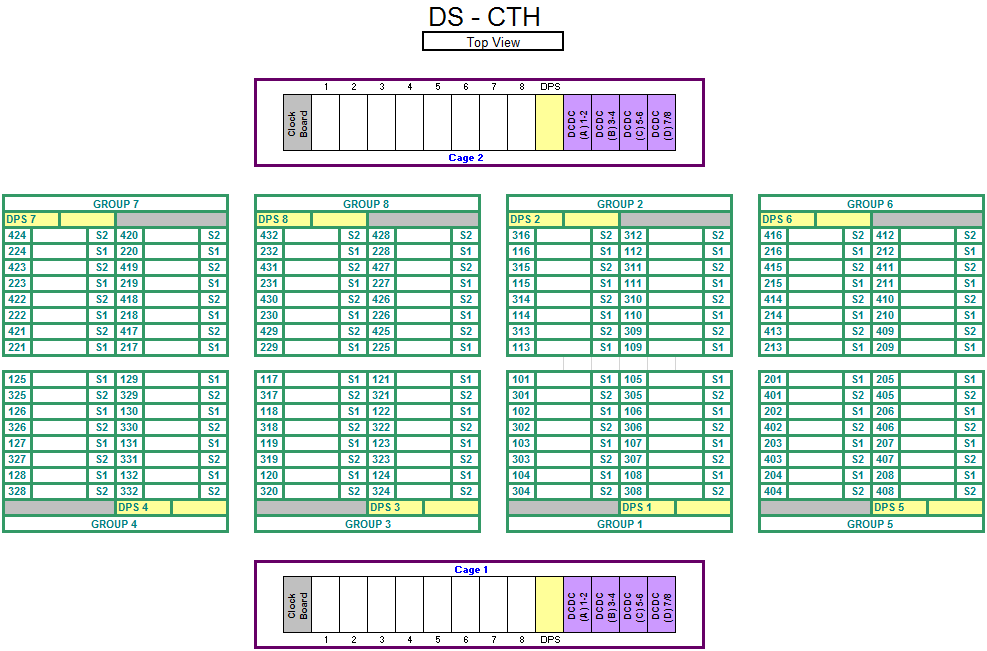
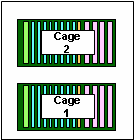
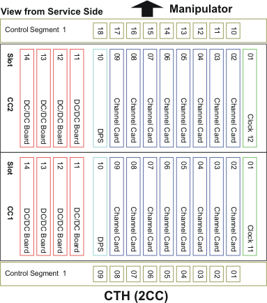

DUT interface layout - Compact Test Head with DUT Scale interface
This topic shows the DUT interface layout for compact test heads of V93000 Pin Scale and Smart Scale systems with DUT Scale interface.


Below is the mapping of control segment slot numbers to actual channel board numbers (view from service side):

Functional changes
- Introduced in SmarTest 7.1.1